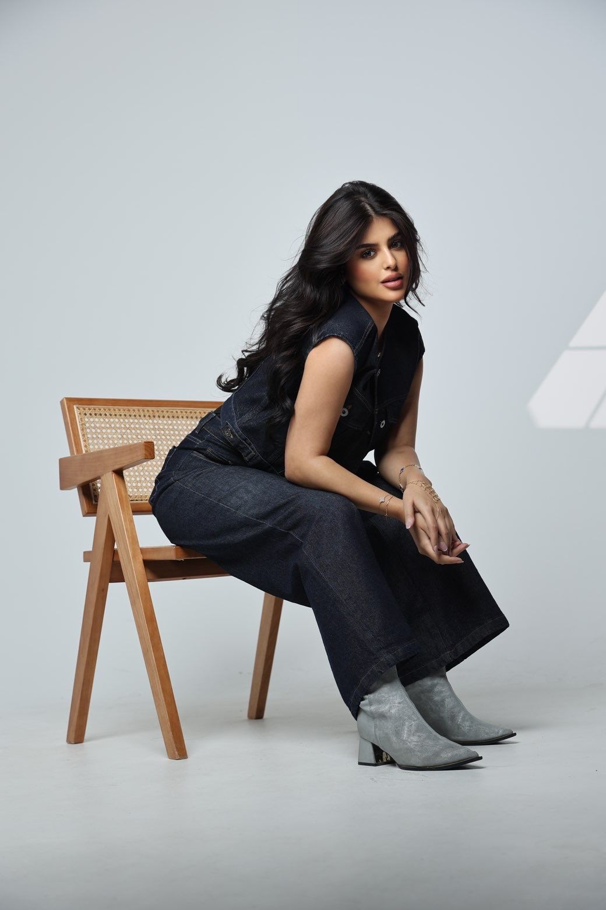

BUSINESS
الرئيسية
أعمالي
دراما
مسرح
مختارات جاز
تواصل

Yasmeen Alenezi
للتواصل المهني والتعاون الإعلاني
بوتيكات | Boutiqaat
واتساب | للدعاية والإعلان
انستقرام | Instagram
سناب شات | Snapchat
تيك توك | TikTok
جاكو | Jaco
تواصل عبر البريد الإلكتروني